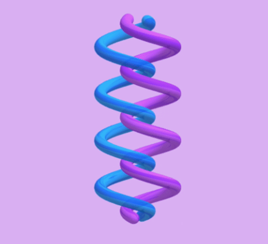

Noah Yi-Ting Hung
Noah Yi-Ting Hung 
I am PhD candidate in Machine Learning and Data Science, Department of Mathematics and Statistics at Georgia State University, under the guidance of Professor Li-Hsiang Lin. My research focuses on the intersection of machine learning, image science, and uncertainty control, with a particular interest in non-parametric modeling and portfolio optimization
I received my Master's in Joint Statistics and Computer Science at Purdue University, where I worked with Professor Qi Guo on a computer vision project. Prior to starting my PhD, I was a graduate research assistant under the supervision of Professor Henry Horng-Shing Lu, working on deep mixture density networks. I completed my undergraduate studies at National Taiwan University, working with Ku-Wei Liao on reliability research.
yhung7@gsu.edug-scholar
✎ᝰ. Publication
I am eager to learn and join exciting AI and uncertainty qualification projects. Please do not hesitate to reach out for collaboration!!
 Sparse Deep Additive Model with Interactions: Enhancing Interpretability and Predictability
Noah Yi-Ting Hung, Li-Hsiang Lin, Vince D. Calhoun; (Submitted.)
arXiv 2025 Recent advances in deep learning highlight the need for personalized models that can learn from small or moderate samples, handle high-dimensional features, and remain interpretable. To address this challenge, we propose the Sparse Deep Additive Model with Interactions (SDAMI), a framework that combines sparsity-driven feature selection with deep subnetworks for flexible function approximation. Unlike conventional deep learning models, which often function as black boxes, SDAMI explicitly disentangles main effects and interaction effects to enhance interpretability.

Deep P-Spline: Theory, Fast Tuning, and Application
Noah Yi-Ting Hung, Li-Hsiang Lin, Vince D. Calhoun; (Under Revison.)
arXiv 2025 We introduce a difference penalty that automates knot selection, thereby simplifying the complexities of neuron selection. We name this method Deep P-Spline (DPS). This approach extends the class of models considered in conventional DNN modeling and forms the basis for a latent variable modeling framework using the Expectation-Conditional Maximization (ECM) algorithm for efficient network structure tuning with theoretical guarantees.

Semi-Markov process-driven maintenance scheduling for Tainter gate system considering multiplelimit states
John Thedy, Kuo-Wei Liao, Noah Yi-Ting Hung; (Accepted.)
JSHM 2024 Adopting the Semi-Markov Process, which accommodates non-exponential distribution of state durations, to formulate optimal maintenance strategies for Tainter gate systems that are noted for their prolonged dormancy and significant operational uncertainties.
✎ᝰ. Recent projects


✎ᝰ. News
Presented our work, " Deep P-Spline: Fast Tuning, Theory, and Application " during the 2025 CAPASUS Conference in Atlanta, Georgia!
Feb 2025
The paper Deep P-Spline: Fast Tuning, Theory, and Application was selected as a winner for SPES + Q&P Student Paper Competition. I will present our work during the 2025 Joint Statistical Meetings (JSM) in Nashville, Tennessee!
Jan 2025
Headed for University of Florida Department of Statistics’ Annual Winter Workshop (WW 2025)
See More
Headed for University of Florida Department of Statistics’ Annual Winter Workshop (WW 2025)
Attended to Chicaog for Midwest Machine Learning Symposium (MMLS 2023) for poster.